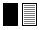
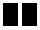

|
| Übersicht |
Versteckte Vokabeln –
Lernen wie zu Schulzeiten mit dem guten alten Vokabelheft!
Erinnern Sie sich noch? In der Schule hat man doch oft mit einem Vokabelheft die neuen Wörter trainiert.
Man hat eine Seite zugedeckt und sich gefragt, ob man die Bedeutung des Wortes in der Fremdsprache weiß.
Natürlich konnte man auch die Seite mit der Fremdsprache zudecken und prüfen, ob man die deutsche
Entsprechung noch weiß.
Genau dieses Prinzip haben wir hier in unserer Software umgesetzt:
Versteckte Vokabeln –
Lernen wie zu Schulzeiten mit dem guten alten Vokabelheft!
Lernen wie zu Schulzeiten mit dem guten alten Vokabelheft!
 |
Die linke Seite verstecken! Wenn Sie auf dieses Symbol klicken, wird die linke Seite – also die Fremdsprache – verdeckt. Wenn Sie jetzt mit dem Zeiger Ihrer Maus über den schwarzen Balken wandern, wird die Lösung wieder sichtbar. Wenn Sie auf die Lösung klicken, bleibt das Wort sichtbar. So können Sie alle Vokabeln markieren, die Sie schon können. |
 |
Die rechte Seite verstecken! Sie können auch die rechte Seite – also die deutsche Übersetzung – der Vokabelliste abdecken lassen. Wenn Sie jetzt mit dem Zeiger Ihrer Maus über den schwarzen Balken wandern, wird die Lösung wieder sichtbar. |
 |
Beide Seiten verstecken! Mit dieser Funktion können Sie testen, ob Sie die Vokabeln schon nach Gehör schreiben können. Dazu klicken Sie einfach auf das Lautsprechersymbol. Jetzt wird Ihnen das Wort vorgesprochen. Wissen Sie, wie man das schreibt? Wenn Sie mit dem Mauszeiger über den schwarzen Balken fahren, wird das Geschriebene sichtbar. Das hätten Sie auch so geschrieben? – Gratulation! Aber wissen Sie denn die deutsche Bedeutung noch? Diese finden Sie unter dem zweiten schwarzen Balken versteckt. |
 |
Anhören, bitte! Wenn Sie auf das Lautsprechersymbol klicken, öffnet sich ein Audio-Programm auf Ihrem Rechner und Sie werden hören, was Sie gerade lesen. |
 |
Ein Schritt nach vorne! Über dieses Symbol wechseln Sie zur Vokabelliste der nächsten Lektion. |
 |
Ein Schritt nach hinten! Über dieses Symbol wechseln Sie zur Vokabelliste der vorhergegangenen Lektion. |